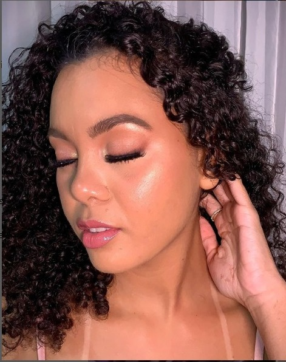

Em 2015, começava a minha carreira profissional na maquiagem,mas na verdade desde de criança a maquiagem já fazia parte da minha vida. Sempre fui apaixonada pelo o universo da beleza! Filha de manicure, cresci dentro de salões de beleza e amava quando minha mãe era revendedora de uma famosa revista de cosméticos. E eu me inspirava nas modelos da revista para me auto maquiar. Enfim, sou autodidata, e só no ano de 2014 fiz meu primeiro curso, e até hoje já tenho 9 Especializações, e já estou partindo para a 10º Aperfeiçoamento. Apesar de ser jovem, adquiri bastante experiência ao longo desses anos, pois trabalhei muito. Hoje sou especialista em Make Beauty!
É um estilo de maquiagem que realça a beleza natural. Aprimorando e focando nos traços naturais do rosto. E pode ser utilizados detalhes de Glow e/ou Matte.
